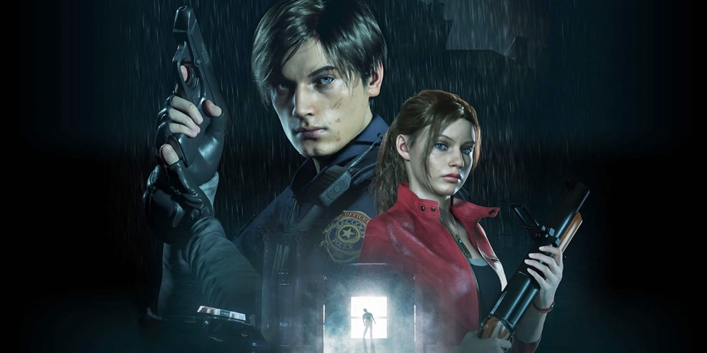

Resident Evil 2 - Remake
Resident Evil 2 é um jogo eletrônico de survival horror desenvolvido e publicado pela Capcom, sendo um remake do jogo original de 1998. Os jogadores controlam o policial novato Leon S. Kennedy e a estudante universitária Claire Redfield enquanto tentam escapar de Raccoon City durante um apocalipse zumbi.

Devil may cry 5
Devil May Cry 5 é um jogo eletrônico de ação-aventura hack and slash desenvolvido e publicado pela Capcom. É o quinto título principal da série Devil May Cry e foi lançado em 8 de março de 2019 para Microsoft Windows, PlayStation 4 e Xbox One.

Far Cry 5
Far Cry 5 é um jogo eletrônico de tiro em primeira pessoa de ação-aventura ambientado em um mundo aberto. Foi desenvolvido pela Ubisoft Montreal e publicado pela Ubisoft para Microsoft Windows, PlayStation 4 e Xbox One em 27 de março de 2018. É o décimo titulo da serie Far Cry e o quinto jogo principal.